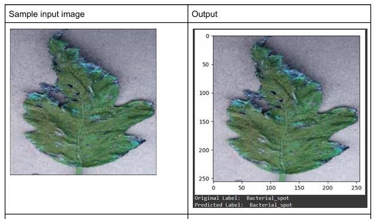
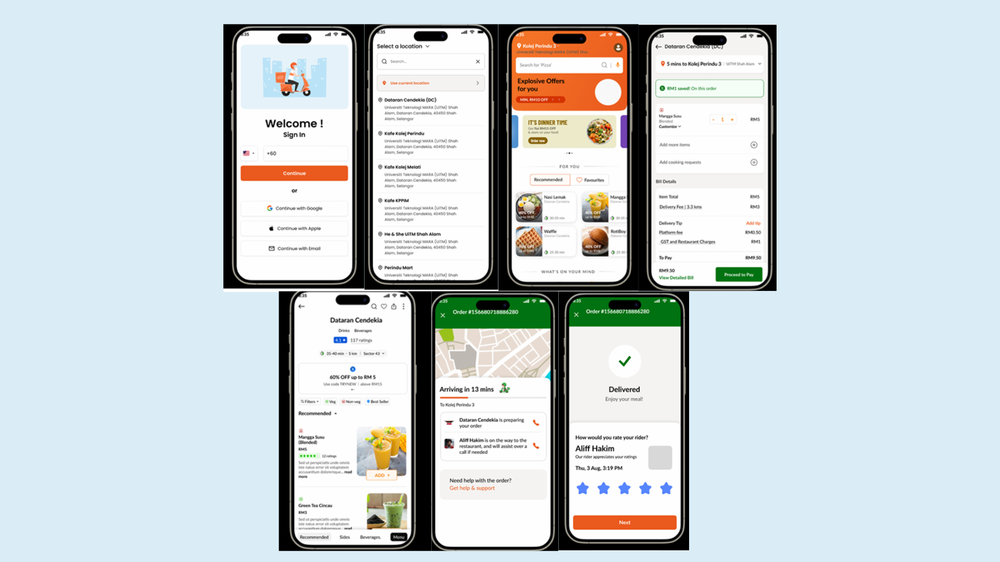

Academic Profile
| Degree | Institution | Role / Specialization | Year |
|---|---|---|---|
| Bachelor of Computer Science (Hons.) Multimedia Computing | Universiti Teknologi MARA (UiTM) | Software Requirement Analyst / Core Developer | 2023 - Present |
Skills & Tools
- Game & VR Development: Unity Engine, C# Scripting, 2D/3D physics, Environment Design.
- Web Development: HTML5, CSS3, Tailwind CSS, JavaScript, basic Flask (Python Backend).
- AI & Image Processing: Deep Learning, CNNs (like VGG16), TensorFlow, Keras.
- Software Engineering: Gathering requirements, UML Diagrams, writing SRS documents.
Featured Projects
Demon Rush (CSC683)
About the project: A 2D endless runner game set in a castle. We added a twist where your health bar constantly drains, so you have to keep moving, killing enemies, and using a grappling hook to survive as long as possible.
What I did:
I worked heavily on the main game loop in Unity. I wrote the C# scripts for the dynamic HP draining system and programmed the physics for the grappling hook mechanic.
Endless Drive (CSC573)
About the project: A 3D driving game built with VR principles in mind. The player drives down an infinitely generating highway and has to dodge obstacles at increasing speeds.
What I did:
I helped write the code that randomly generates the roads and obstacles so the map never ends. I also worked on balancing the game's Easy and Hard modes so it felt fair to the player.
AI Fruit Freshness (CSC583)
About the project: An AI model we trained to look at images of fruit and automatically detect whether they are fresh or rotten using deep learning.
What I did:
I helped train the VGG16 CNN model using TensorFlow. I also handled checking the model's accuracy by creating confusion matrices and accuracy plots to make sure it was learning correctly.

Tomato Leaf Disease AI (CSC566)
About the project: An image processing project aimed at agriculture. We built a CNN to classify four types of tomato leaf conditions: Bacterial Spot, Leaf Mold, Spider Mites, and Healthy.
What I did:
I worked on preprocessing the images before feeding them to the AI, and helped design our CNN model. As a team, we were really proud to achieve a 93.33% accuracy rate on our test data.

Smart Finance Tracker (CSC649)
About the project: A web app to help university students track their spending. Instead of just filling out boring forms, we integrated a chatbot so users can manage their budgets conversationally.
What I did:
I focused on connecting our HTML/JS frontend to the Python Flask backend. I also helped integrate the NLP engine so the chatbot could actually understand what the user was asking it to track.

Campus Cafeteria Ordering System
About the project: A proposed software platform for students to order food online from campus cafes, track their orders, and pay online.
My Role: Requirement Analyst
For this project, my main job was in the planning phase. I interviewed potential users, gathered the system requirements, and wrote up the full Software Requirements Specification (SRS) document for the team to follow.

Kolej Alam Bina Research (CSC541)
About the project: A website built to present academic research about how urban landscapes (parks, historical areas) in Malaysia affect community satisfaction.
What I did:
I coded the website from scratch using HTML, CSS, and JS. The goal was to take a lot of heavy academic data and make it interactive and easy for normal people to read online.